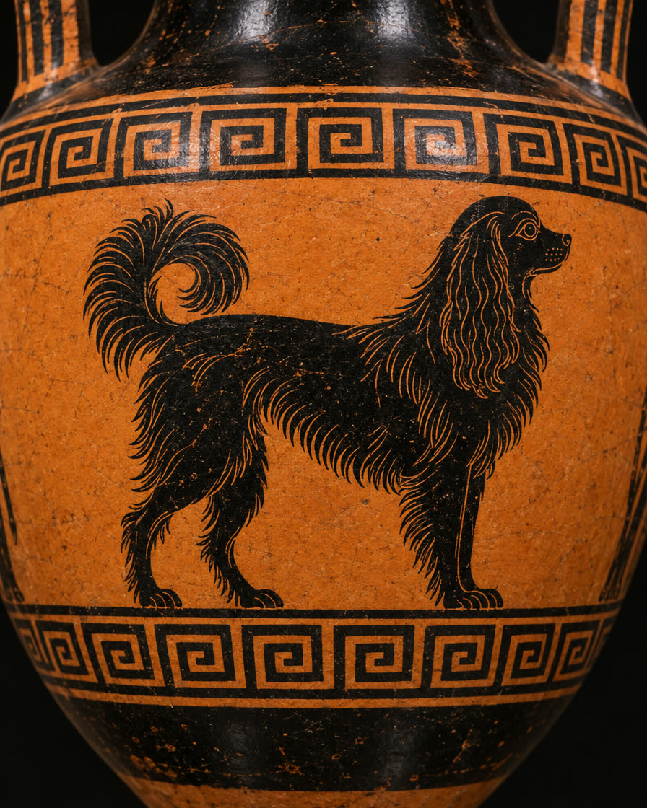
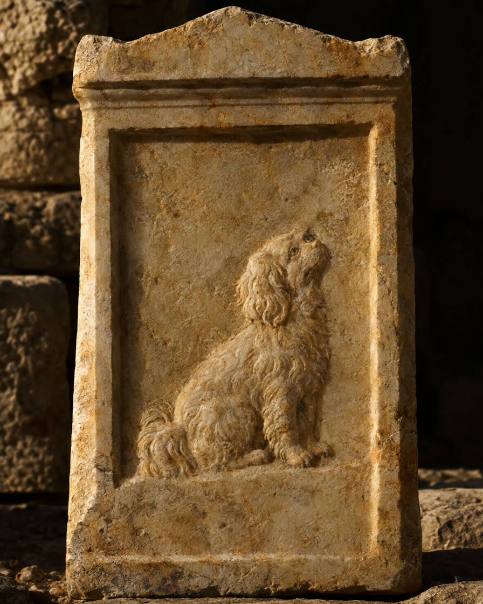
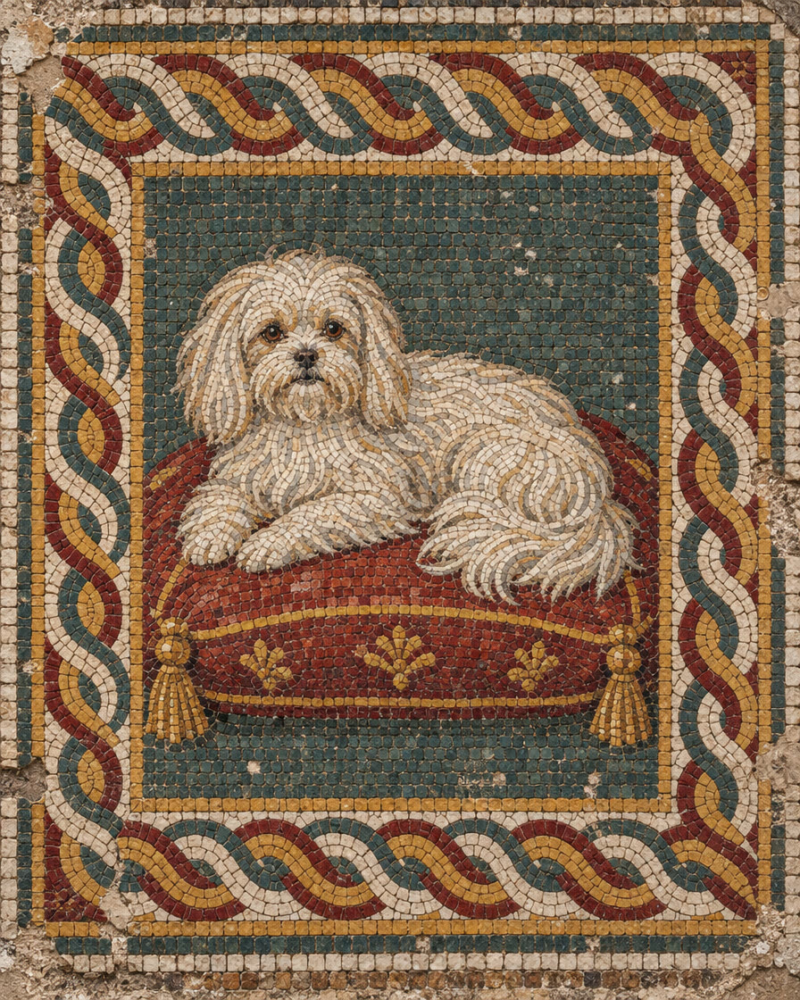
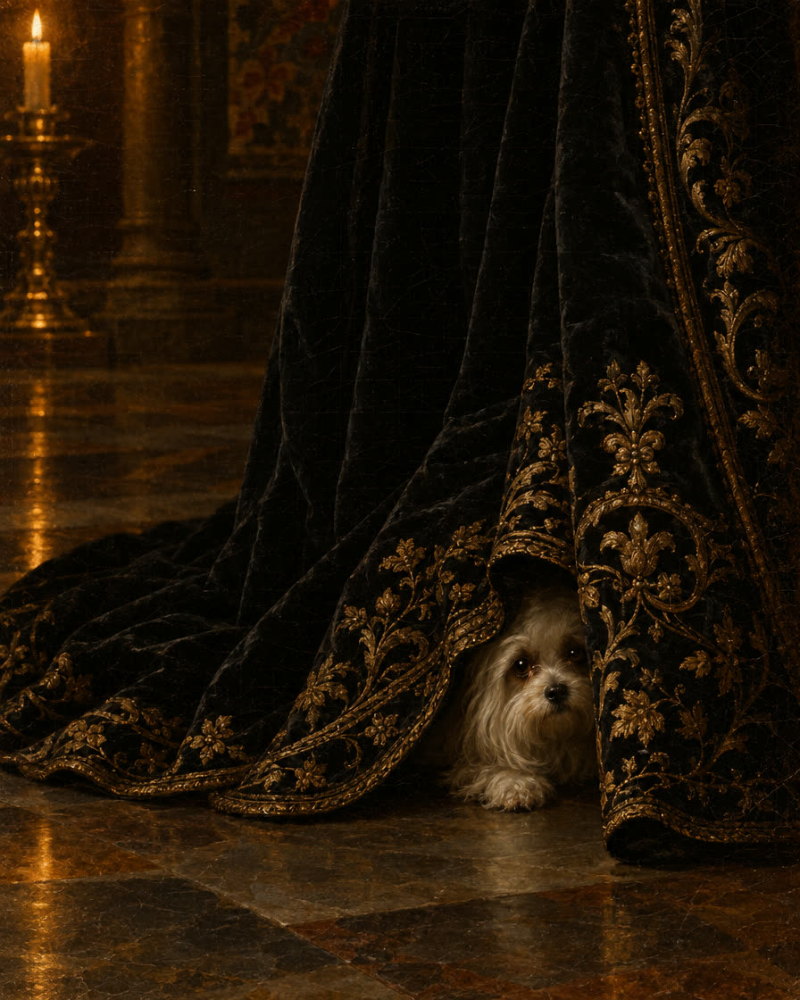
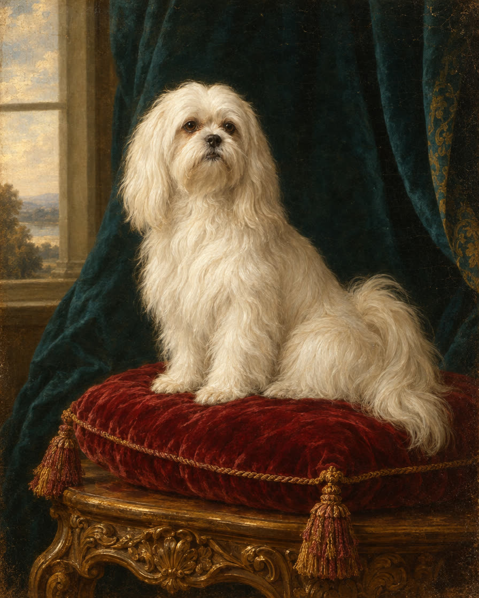
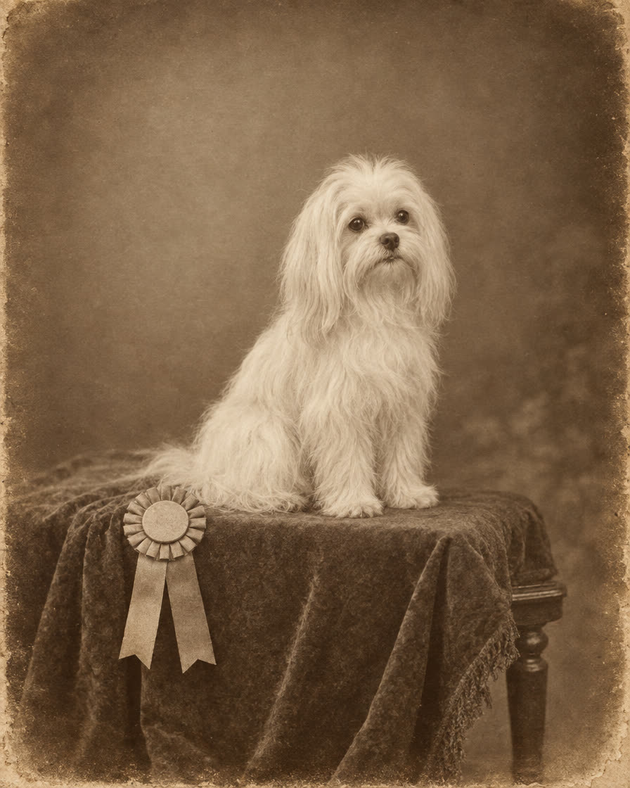
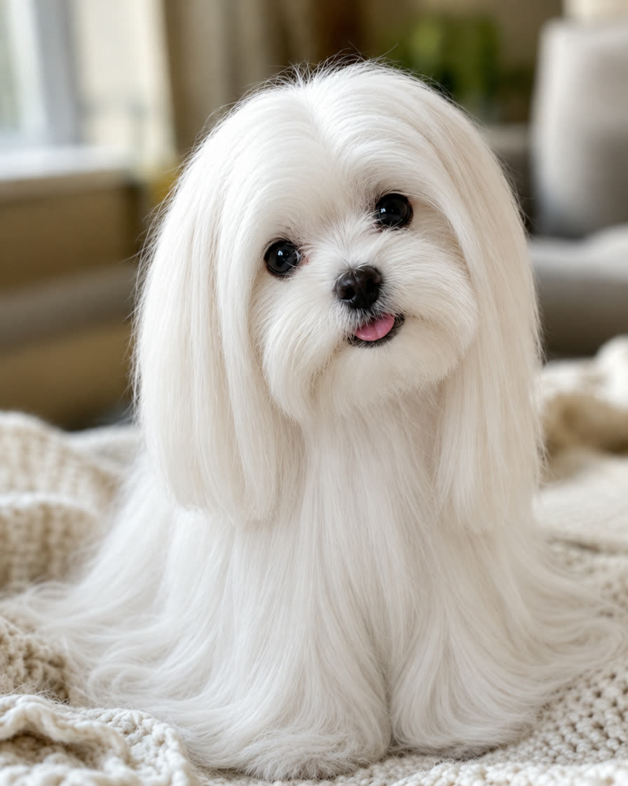
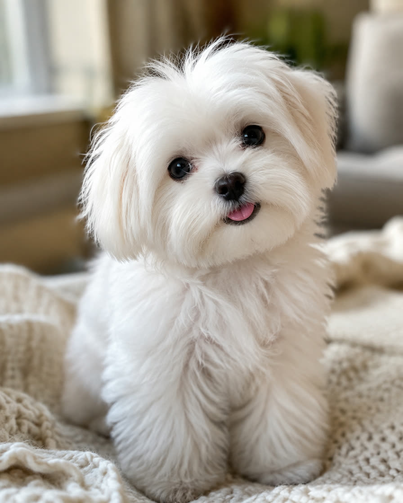
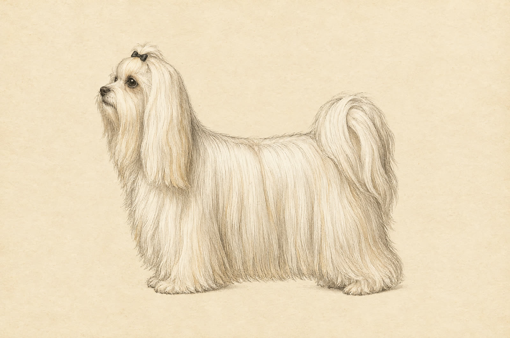

On recordc. 500 BC
The word on the pot
An Attic amphora found at Vulci shows a small dog with one word beside it: melitaie. It is the earliest trace most accounts point to.
Twenty-five centuries of laps.
Greek potters painted it.
Writers argued over where it came from. Legend hid it in a queen's skirts.
The silk is the easy part to love.
The daily brush, the toothbrush and the company are the deal.
This is the Maltese: a small dog that asks for a lot of you. See if you fit.
Take the fit checkAt a glance
The American Kennel Club caps the breed at seven pounds and prefers four to six. Everything people love and worry about in this dog follows from that one number.
History
Some of this dog's past is written down. Some is only a good story. Sort it yourself.

An Attic amphora found at Vulci shows a small dog with one word beside it: melitaie. It is the earliest trace most accounts point to.

Theophrastus pokes fun at a vain man who sets up a memorial for his dead Melitan dog, inscribed "scion of Melita." The joke only works if people knew the dog.

Martial wrote adoring verses about Issa, a friend's lapdog. Breed books love to call her a Maltese. Nobody can prove she was.

The story goes that a small dog was found hiding under Mary Queen of Scots' gown at her execution. That it was a Maltese is the part resting on legend.

Queen Victoria asked Edwin Landseer to paint The Lion Dog from Malta, a dog named Quiz, as a gift for her mother. This is our imagining, not his painting.

A "Maltese Lion Dog" appears at the first Westminster show in 1877. The American Kennel Club registers the breed in 1888.
In 1536, Jean Quintin wrote that the people of Malta no longer knew the dog. Today's breed took shape with Victorian breeders, and no pedigree ties it to the dogs on those pots. Whether "Melita" meant Malta or the Adriatic island of Mljet is still argued. Recent scholars lean Malta.
The art on this rail is AI imagined for this guide. None of it is a museum piece.
Try it
A Maltese has one silky layer and no undercoat. Skip the brush and the coat knots fast. Comb this one and see what a daily session teaches.


Puppy cutShow coatDrag the line
Most pet Maltese live in a puppy cut. It is shorter and far easier, though it still needs brushing. A groomer every six to eight weeks keeps it tidy. The floor-length coat is beautiful, and it is close to a daily job.
Illustrative images, AI generated or AI edited.
Character
Other breeds herd or hunt. The Maltese has been kept for company for as long as anyone has written about it. That is the charm, and also the care plan.
Health

A plain-language summary drawn from VCA Animal Hospitals' breed guide, for general education. Your vet knows your dog, so ask them first.
The fit check
Seven honest questions, one pound each. It takes a minute and may save you and a dog a hard year.
0 of 7 poundsStraight answers
They shed very little and have no undercoat. No dog is fully hypoallergenic, though. If someone at home has allergies, spend real time with a Maltese before you commit.
Not for long days without a plan. The breed tolerates time alone poorly, and the stress can come out as barking or chewing. Budget for a midday visit or daycare.
Owners often name it as the toughest part. Small dogs have small accidents that are easy to miss. A crate, a fixed schedule and months of patience do most of the work.
A long coat needs brushing every day. A puppy cut needs less, plus a groomer every six to eight weeks. Teeth need daily care either way, and the eye area needs regular cleaning.
They are affectionate and playful, and they are also easily hurt by a fall or a rough hug. Calm older children suit this dog far better than toddlers.
Teacup is a sales word. The breed standard already tops out at seven pounds, and very small puppies carry a higher risk of low blood sugar. Be wary of anyone charging more for less dog.
Start with a breed rescue, or a breeder who shows you health results for the parents and lets you meet the mother. Heart and knee checks are the first things to ask about.
The field guide
A one-page care card and a first-month plan: the daily routine, the vet questions and the shopping list.
On a live site your guide would be on its way now. This is a sample, so nothing was sent or stored.